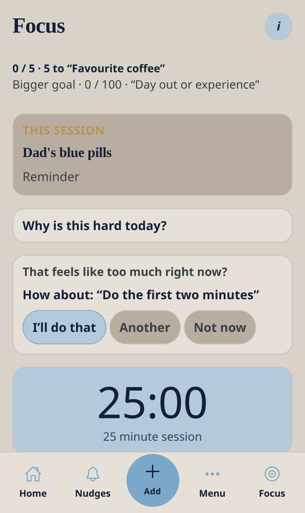

Core module — no Ready4 pack required
Focus
One thing, for a short while. Breaks are part of the plan.
Nudge me Ready v3 · 0.3.1 · Bottom tab: Focus.

Workflow
- Open Focus.
- If it feels heavy, use Why is this hard today? or take the smaller step offered.
- Start the timer.
- Pause, skip or stop whenever you need — there is no failed streak.